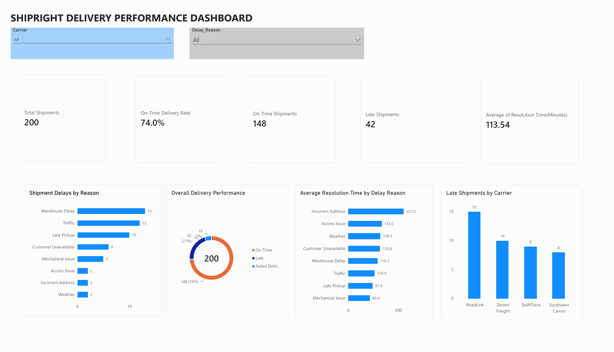

Power BI · Business analyst portfolio project
ShipRight Delivery Performance Dashboard
Shipment Delay Process Improvement
I analyzed 200 shipment records using Excel and SQL and built an interactive Power BI dashboard, filterable by carrier and delay reason, to track delivery performance, identify delay drivers, and support process improvements. I also completed AS-IS/TO-BE process mapping, root cause analysis, and Jira user stories, acceptance criteria, and UAT test cases.
Key findings
- On-time delivery rate was 74% (148 of 200); 42 shipments (21%) were late and 10 (5%) failed.
- Warehouse delays, traffic, and late pickups caused about two-thirds of all delays (35 of 52).
- RoadLink had the most late shipments (15 of 42, about 36%); incorrect-address issues took the longest to resolve (221 minutes, about twice the 114-minute average).